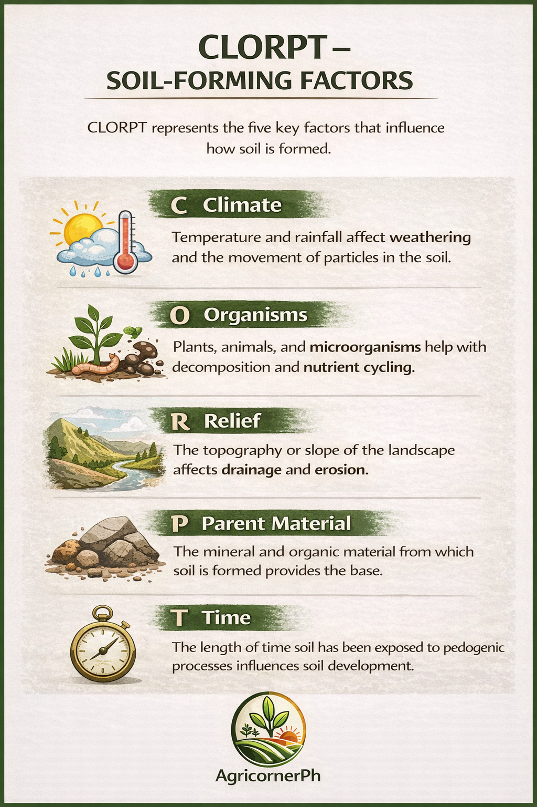

🧪 Soil Science Review
Review the core concepts of soil science including soil formation, horizons, texture, structure, pH, and soil genesis.
1. Soil Genesis


Soil is formed through the interaction of five major factors known as CLORPT.
CLORPT stands for Climate, Organisms, Relief, Parent Material, and Time.
2. CLORPT Factors



The five soil-forming factors influence how soils develop over time.
3. Importance of Soil Genesis

Soil genesis helps explain how soils develop, why soil properties differ, and how soils can be managed properly for agriculture.